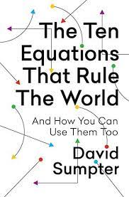

The Ten Equations that Rule the World, by Sumpter
Monday January 16, 2023
Sumpter has Bill Nye applied math energy. His central gimmick—a secret society of people who know math—is a bit much. He's most interesting when connecting equations and philosophy, but he likes logical positivism more than his hero Ayers did, and his ultimate appeal to ethical intuitionism is unsatisfying. Still very interesting in places, and I'm generally with him.
I like the core idea of trying to distill a lot of understanding into a few core concepts. I think Sumpter's book highlights both the promise and challenge of attempting this.

Here are the names Sumpter uses for his equations (and more conventional names):
- The Judgment Equation (Bayes' theorem)
- The Betting Equation (Logistic regression)
- The Confidence Equation (Normal confidence intervals)
- The Skill Equation (Markov property; memorylessness)
- The Influencer Equation (Stationary distribution; PageRank)
- The Market Equation (A sort of autoregressive differential model?)
- The Advertising Equation (Correlation coefficient)
- The Reward Equation (Exponential moving average; Q-learning)
- The Learning Equation (Derivative of quadratic loss; gradient descent)
- The Universal Equation (If-then; trying to get from "is" to "ought")
With the exception of #6, I was reasonably familiar with all of these. My failure to feel connected to the literature (or even what a common name might be) for #6 makes me feel that this book might not be the best way to encounter these ideas for the first time.
"The first lesson to draw from Bayes's rule, the judgment equation, is that we should be slow to draw definitive conclusions." (page 15)
"Many people think of math as being all about objectivity; it's not. It is a way of representing and arguing about the world, and sometimes the things we argue about are known only to us." (page 24)
He's a professor of applied math, after all.
"Much of mathematical modeling is about dividing the world into understandable component parts, ..." (page 63)
"What I hadn't understood when I started working with sports statistics was just how much time I would have to sit listening to men telling me why they believed they were the special one." (page 85)
"When Andrey Markov first wrote down his equation, he wasn't interested in modeling sporting excellence. He was interested in great literature. In 1913, he presented, at the Russian Royal Academy of Sciences, an analysis of the first chapter and parts of the second chapter of Pushkin's novel Eugene Onegin. In his analysis of these twenty thousand Russian letters, he determined the probability of sequences of vowels and consonants. He constructed a model that predicted, based on the letter that had just occurred in a text, whether a vowel or a consonant was more likely to occur as the next character. In doing so, Markov had created a model for creating new Pushkin works, one character at a time." (page 92)
Neat! I think I hadn't heard this story before.
"Accurate reporting of assumptions is just as important as accurate reporting of results." (page 99)
"The salaries offered by tech giants were enough to lure even the purest of mathematicians." (page 113)
"The division of the world into models, data, and nonsense gave the members of TEN a sense of certainty." (page 122)
"I had researched Cambridge Analytica's algorithm in detail during 2017, the year before the scandal broke, and reached a conclusion that contradicted both Nix and Wylie's versions of events. I doubted that the company could have influenced the US presidential election. They had certainly tried, but the methods they claimed to have used to target voters were flawed." (page 146)
"Working on the inside, he [Alex Kogan] had reached the same conclusion about Cambridge Analytica as I had. He phrased it politely at the Senate hearing. To me, he said, “That shit doesn't work.”" (page 164)
"Instead of looking for the real reasons for the rise of nationalistic sentiment that had brought Donald Trump to power, that had caused Brexit, that was responsible for the Five Star movement in Italy, Viktor Orbán in Hungary, and Jair Bolsonaro in Brazil, everyone seemed to be rushing to find a James Bond-type villain, an evil individual who had poisoned the political waters. Their Dr. No came in the form of Alexander Nix and his company, Cambridge Analytica. Somehow this man, with only a basic understanding of models and data, was seen to have manipulated the whole of modern democracy." (page 168)
I had some wonderings like this while reading Mindf*ck...
"The organization Tristan Harris cofounded, the Center for Humane Technology, has advice about how to take control and move your own mind away from the tipping point." (page 186)
Page 187 mentions lazy ants, but is apparently unaware of follow-up research. (coverage)
"Price believed, building on the philosophy of Plato, that mathematics provided a truth that was independent of our physical reality and that this truth told us the ethical thing to do. But A. J. Ayer seemed to overwrite this view in the mid-twentieth century, arguing with his principle of verifiability that we can't expect to find any answers to moral questions in math. A mathematics that is independent of physical reality, he demonstrated, is impossible to verify." (page 209)
"The sheer number of mathematical theorems that have proved to be true led French mathematician Henri Poincaré to reflect in his 1902 book, Science and Hypothesis, that “if all the assertions which mathematics puts forward can be derived from one another by formal logic, mathematics cannot amount to anything more than an immense tautology. Logical inference can teach us nothing essentially new ... But can we really allow that these theorems which fill so many books serve no other purpose than to say in a roundabout fashion that ‘A = A’?”" (page 214)
"In response to the rhetorical tone used by Poincaré, Ayer wrote, “The power of logic and mathematics to surprise us depends, like their usefulness, on the limitations of our reason.”" (page 216)
"I have come to believe that there is a very simple answer to these dilemmas: we should learn to trust and use our own ethical intuitions." (page 222)
"I don't have any conclusive proof, but I believe that after logical positivism strips away the idea of a universal utilitarianism, we are left with moral intuition to guide us. It is this soft way of thinking that tells us which problems to solve." (page 223)
"We need to be soft when we define our problems and brutally hard when we solve them." (page 223)